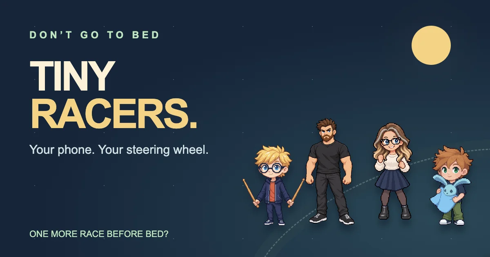

Bring your phone
Scan the QR code on the TV and join through your phone or tablet browser. Choose a character, get ready and tilt to steer.

A family game for the big screen
Your phone becomes your steering wheel. Race around the house with the Don’t Go To Bed family, collect toy power-ups and try to keep up with the pack.
Watch Tiny Racers in actionHackathon preview for TV. Not yet available in app stores.
See it in action
Watch the Fire TV / Vega demo, recorded in Amazon’s official simulator.
Race night, without the extra controllers
Scan the QR code on the TV and join through your phone or tablet browser. Choose a character, get ready and tilt to steer.
The current hosted preview supports up to four human controllers. Add bots for a field of up to eight racers.
Five tracks, ramps, slippery corners and toy power-ups. Race through the Dining Table, Garden, Bedroom, Snowdrift and Mud Mayhem.
From our family to yours
Tiny Racers brings the characters from Don’t Go To Bed to a shared-screen racing game. Testing with the boys helped shape the steering and setup.
Built for the Build, Ship, Shape: Amazon Developer Hackathon. The preview uses an internet connection for phone pairing and controls. Physical Fire TV testing is still ahead.
Before race night
Explore, build and find Mammy before nightfall.
Explore Don’t Go To Bed